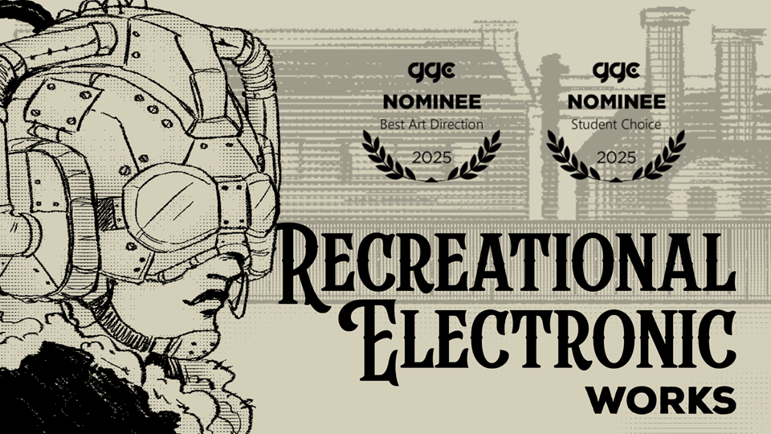
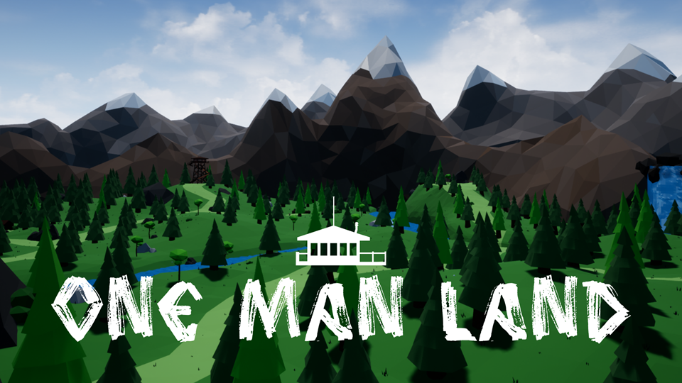

WAVA
Solo Project | Bachelor's Thesis
| Release | Team | Engine | Duration |
|---|
| May 2023 | 1 | Unity | 1 ½ years |
|---|
Role:
Solo DeveloperLearnings:
Finishing and releasing a complete game, "show don't tell", cinematic feel through simple visuals and fluid camerawork, controller adaptability, 2D level design.Summary:
Minimalistic puzzle-platformer about growth and finding your place, with exclusive focus on environmental and interactive storytelling.
Gameplay based on overcoming setbacks and getting knowledge from them, which is used to advance through the world.
Subtler themes of grief, coming-of-age, or letting go of people are also present.Accolades:
Thesis on WAVA awarded full marks and the Computer Field Award at the 28th Premis Patronat.
Chosen to present at the Talent Open Mic organised by DeviCAT, the Association of Video Game Professionals in Catalonia.

Recreational Electronic Works
Team Project | Master's Thesis
| Release | Team | Engine | Duration |
|---|
| TBD | 3 | Unity | > 4 months |
|---|
Role:
Original Concept / Technical Game Designer / Programmer / UX DesignerLearnings:
Counterfactualism and satire for social commentary, in-game economy balancing, designing an immersive user experience, conceptualising a unique setting.Summary:
Business simulator revolving around the what-if scenario of an early version of video games - known as RecElecs - being first introduced in Victorian London.
Gameplay based on directing RecElec production, managing the workforce, and trying to keep a sinking factory afloat.Accolades:
Thesis on RecElec graded with a pass with distinction, the highest honour at university level in Sweden.
Nominated for Best Art Direction and the Student Choice Award at the Gotland Game Conference 2025.

Grady Belle
Master's Course Project
| Release | Team | Engine | Duration |
|---|
| Jan 2025 | 2 | Unity | 1 week |
|---|
Role:
Writer / Technical Game Designer / Sound Designer / ProgrammerLearnings:
Scoping and developing a complete project in a week, children's book-style writing, audio editing and layering to create an immersive soundscape, designing a satisfying user interface and experience.Summary:
Interactive tale about a lonesome haunted manor in the Louisiana bayou named Grady Belle, and its unlikely friendship over the years with a little girl named Bella.
Gameplay based on simple click and drag interactions that enhance the storytelling.Accolades:
Graded with a pass with distinction.
Castells
Level Up Game Jam 2025 - Finalist
| Release | Team | Engine | Duration |
|---|
| Jul 2025 | 2 | Unity | 1 week |
|---|
Role:
Gameplay Designer / Sound Designer / UX Designer / ProgrammerLearnings:
Reinventing well-known games, physics as the main mechanic, cultural representation through appealing visuals and immersive sound, responsive user interaction.Summary:
Reverse-jenga based on the traditional human towers built in Catalonia, also known as "castells". Gameplay based on mounting objects to reach a specific goal through three levels with increasing difficulty.Accolades:
Voted as one of the 25 finalists out of 135 entries; ranked 13th overall, 5th for its art, and 17th for its sound.
Very Mush Alike
Indie Spain Jam 2023 - Finalist
| Release | Team | Engine | Duration |
|---|
| Sep 2023 | 2 | Godot | 1 week |
|---|
Role:
Level Designer / Gameplay Designer / Narrative Designer / ProgrammerLearnings:
Rapid and efficient prototyping, designing levels and puzzles to accommodate diverse characters, balancing character dynamics and mechanics, interactive storytelling.Summary:
Puzzle-platformer about three outcast mushrooms who must combine their strengths, help each other out, and ultimately reach the top of a mountain before the night ends.Accolades:
Voted as one of the 25 finalists out of 178 entries; ranked 21st overall and 13th for its mechanics.

One Man Land
Bachelor's Course Project
| Release | Team | Engine | Duration |
|---|
| Jun 2020 | 3 | UE 4 | 4 months |
|---|
Role:
Narrative Designer / Level Designer / Sound Designer / Gameplay DesignerLearnings:
3D level design, environmental storytelling, Unreal Blueprints scripting, low-poly 3D modeling and animating, in-game economy balancing.Summary:
After a terrible car accident, a man must explore, hunt, collect, craft, and survive in a forest that might be more alive than first expected.
His one and only hope to be rescued is getting inside an abandoned watchtower.Accolades:
Awarded with full marks.
More games!